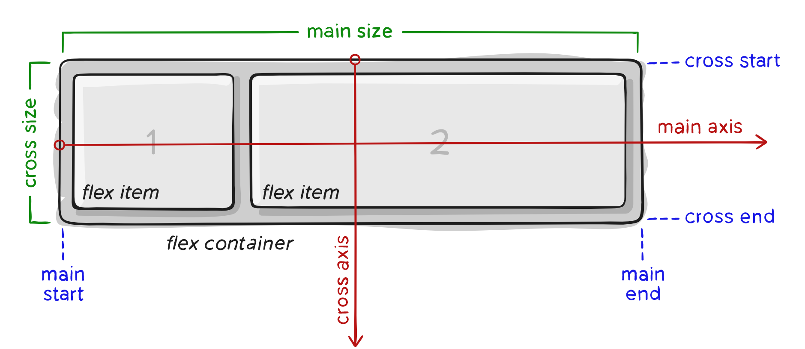

Este sitio a sido diseñado para suplir la necesidad de la presencialidad en la clases de los estudiantes, teniendo en cuenta la crisis de salud mundial que estamos
atravezando por la pandemia causada por el virus del covid 19.
Esta dirigido a todas las instituciones de educacion superior del pais en especial la UNAD, esto como resultado a la necesidad de elaborar recursos educativos
digitales que nos permitan dinamizar las metodologias de aprendizaje autonomo y dirigido. Teniendo en cuenta el avance de la tecnologia podemos enfocar la
enseñanza y aprendizaje de maneras virtuales. Este proyecto, es diseñado con contenidos multimediales e interactivos, basados en HTML5, CSS3 entre otras
tecnologías para que el aprendizaje sea practico y dinamico.
A medida que vamos recorriendo el sitio, podemos ver que es practico lo que permite a los estudiantes acceder a la informacion de manera sencilla.
A continuacion podemos ver un layout del sitio
